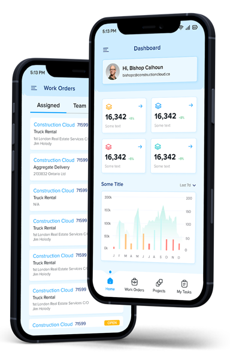

PRODUCT · CONSTRUCTION CLOUD
One connectedplatform for modernconstruction.
Construction Cloud connects project operations, field teams, fleet and financial management so office and site work from the same information.
Cloud
Built for distinct business models
Choose the operation that looks most like yours.
The experience adapts to the workflows, records and decisions each construction business manages every day.
Control the project from estimate to closeout.
Keep field activity, change decisions, labour and project cost connected as work progresses.
Connect the order, load and invoice.
Coordinate material movement and the commercial records that follow each delivery.
Know the condition and cost of every asset.
Bring daily checks, workshop activity and equipment performance into one operating view.
Construction challenges
Built for real construction problems.
Cost overruns found late
Project costs become visible only after month-end.
See cost while you can still act →Field and office disconnected
Paper tickets and site data are re-keyed in the office.
Connect site activity to office workflows →Fleet and equipment blind spots
Inspections and maintenance are tracked separately.
Bring equipment activity into view →Relevant proof
Construction proof, early.
Contextual evidence from comparable construction engagements. Customer details publish only once approved.
Live job-cost visibility from site to office
“A connected operating platform brings field activity and job-cost context into the same decision cycle.”— Customer details pending approval
Construction Cloud capabilities
Explore the modules that connect field and office work.
Customer management
Keep customer contacts, activity and project relationships together.
Sales orders
Move accepted work into an operational order with clear ownership.
Project management
Coordinate project records, progress and delivery activity.
Work order management
Create, assign and complete field or shop work consistently.
Project job cost report
Review project cost in the context of budget and activity.
Employee time entries
Capture labour against the right job and work item.
Vehicle shop work orders
Plan and record maintenance work for fleet assets.
Daily vehicle inspection reports
Document condition, issues and compliance checks each day.
Equipment inspection reports
Capture asset-specific inspection results from the field.
Products management
Maintain the products and materials used across operations.
Load management
Track material movement and the records behind each load.
Expense management
Capture job-related expenses with supporting detail.
Customer invoicing
Turn approved operational activity into customer billing.
Purchase orders
Coordinate purchasing against project and operational needs.
Custom forms
Digitise business-specific forms without separate paper trails.
Reporting integration
Bring operational information into management reporting.
Field experience
Mobile app features
The Construction Cloud mobile experience captures, tracks and shares information where the work happens.

Work Orders
View and manage work orders for improved team coordination and communication.
Daily Vehicle Inspection Reports
Document vehicle conditions and issues to support compliance.
Concrete Loads
Track concrete deliveries and schedules from the jobsite.
My Tasks
Access, update and prioritise assigned work in real time.
Aggregate Loads
Monitor bulk material movement and logistics.
Purchase Orders
Manage order details and coordinate with vendors.
Time Entry
Record work hours, labour and attendance against operations.
Expense Entry
Capture receipts and expense details as work happens.
Projects
Access project details, updates and key information anywhere.
Pit Slip
Access pit slips for material tracking and record maintenance.
How it works
Simple steps from selection to field adoption.
Construction Cloud is designed to move from package selection into configuration and day-to-day field use with a clear implementation path.
Choose the package that fits
Compare the available feature tiers and align the package to the workflows your construction operation needs.
Configure the application
Set up the relevant operational modules, forms and records for the way field and office teams work.
Enable the mobile experience
Give field teams access to the mobile workflows used for work orders, inspections, loads, tasks, time and expenses.
Pricing & plans
Compare Construction Cloud packages.
Compare included capabilities across Essentials, Advanced and Premium. Contact DataInvent for current pricing.
| Features | Essentials | Advanced | Premium |
|---|---|---|---|
| Customer Account & Contact Management | ✓ | ✓ | ✓ |
| Sales Orders & Invoicing | ✓ | ✓ | ✓ |
| Work Order Management & Assignment | ✓ | ✓ | ✓ |
| Work Order Types | ✓ | ✓ | ✓ |
| Products & Price Lists | ✓ | ✓ | ✓ |
| In-App Notifications | ✓ | ✓ | ✓ |
| Vehicle Shop Work Orders | ✓ | ✓ | ✓ |
| Track Concrete & Aggregate Load | ✓ | ✓ | ✓ |
| Contract Management | ✓ | ✓ | |
| Purchase Orders | ✓ | ✓ | |
| Project Management & Scheduling | ✓ | ✓ | |
| Time Entries & Accounting | ✓ | ✓ | |
| Project Manager / Supervisor Approvals | ✓ | ✓ | |
| Time-Off Requests | ✓ | ✓ | |
| Expense Management | ✓ | ✓ | |
| Material Pit & Pit Slips | ✓ | ✓ | |
| Custom Forms | ✓ | ||
| Daily Vehicle & Equipment Inspection Reports | ✓ | ||
| Vehicle & Equipment Safety Inspections | ✓ | ||
| Annual & Semi-Annual Vehicle Inspections | ✓ | ||
| Mobile Application | ✓ | ✓ | ✓ |
Pricing is tailored to the selected package and implementation scope.
Book a Demo →Business outcomes
Turn connected work into stronger results.
Outcome descriptions only. Verified metrics can be added once approved.
Project profitability
See cost against budget while you can still act.
Cost visibilityOperational control
Know what is happening across sites.
One operating viewLess admin
Capture once in the field, use everywhere.
Fewer handoffsFaster decisions
Reporting without month-end assembly.
Current informationImplementation & support
What to expect.
Discovery & configuration
Map your business model, then configure the workflows and forms that support it.
Data & integration
Load customers, jobs and equipment, then connect finance and reporting as appropriate.
Training & support
Prepare field and office teams, then transition into DataInvent product support. Support terms remain to be confirmed.
FAQ
Construction Cloud questions
Straight answers to common questions before a first conversation.
What is Construction Cloud?
A connected platform for construction project operations, field capture, fleet and finance. The approved product definition and platform foundation remain to be confirmed.
Which business models does it support?
Builders and general contractors, aggregate and concrete suppliers, and heavy equipment suppliers.
What's available on mobile?
Work orders, inspections, loads, tasks, purchase orders, time and expense entry, projects and pit slips.
Can it connect with our existing systems?
Integration options are assessed during discovery. The approved integration statement remains pending.
How is it implemented and supported?
A DataInvent-led implementation followed by DataInvent product support. Support terms remain to be confirmed.
SEE IT WITH YOUR WORKFLOWS
See whether Construction Cloud fits your business model.
Walk through the platform around your projects, field processes, fleet and financial workflows.